DTF ve UV DTF baskılı tişört, hoodie, kupa ve promosyon ürünleri; çiftlere özel animasyon ve albüm, çocukluk fotoğrafından hediyelik, kişiye özel şarkı. Tek parçadan toplu siparişe.
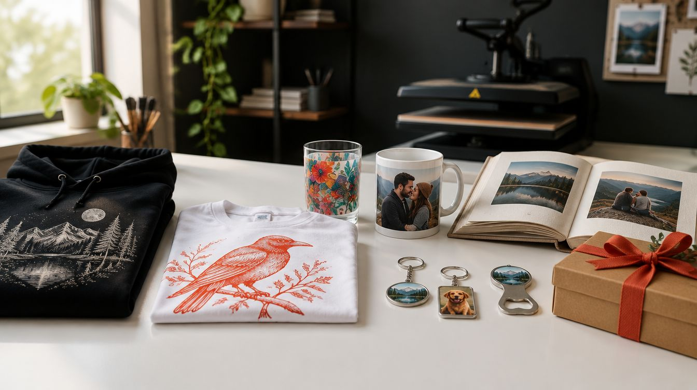
Hazır hediye herkese aynı şeyi söylüyor. Kişiye özel olanı ise iki şeyden ibaret: doğru fikir ve temiz bir baskı. Biz ikisini de aynı masada yapıyoruz — tasarımı çiziyoruz, DTF ya da UV DTF ile basıyoruz, ürünü tedarik edip paketliyoruz. Tek kupa da olur, üç yüz kişilik ekip seti de.
Aşağıdaki her ürünün kendi sayfası var; o sayfalarda ürünün kurumsal kullanımı ve kişiye özel hâli, baskı yöntemi, malzeme bilgisi ve sipariş süreci ayrı ayrı yazılı.
Her ürünün kendi sayfasında kurumsal ve kişiye özel kullanımı ayrı ayrı anlatılıyor.
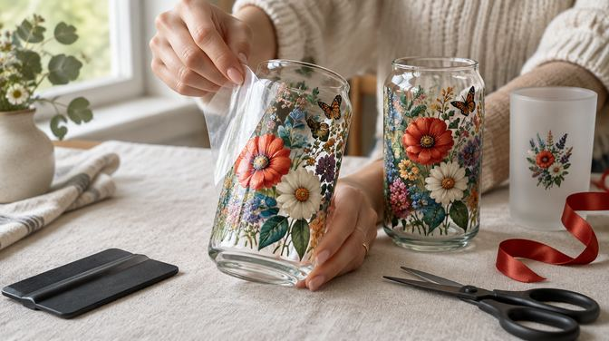
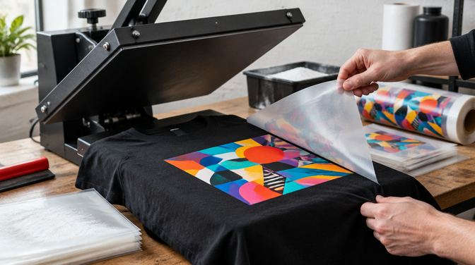
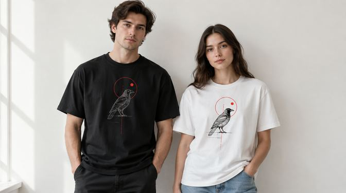
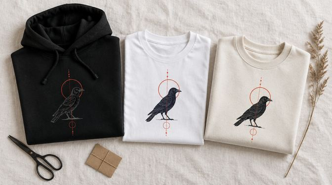
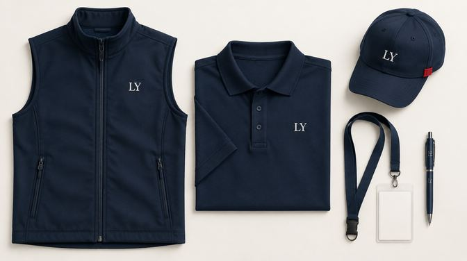
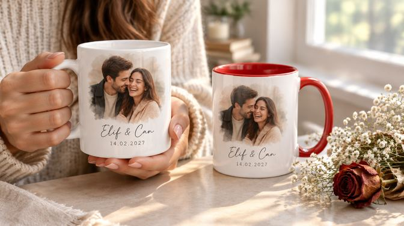
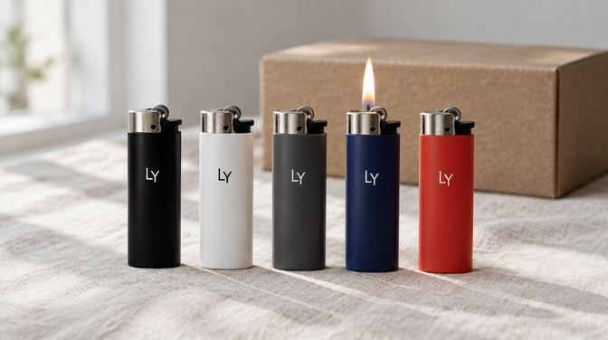
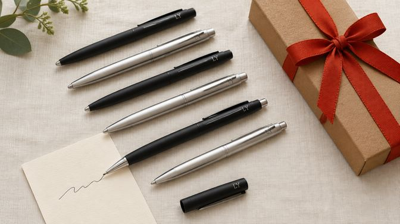
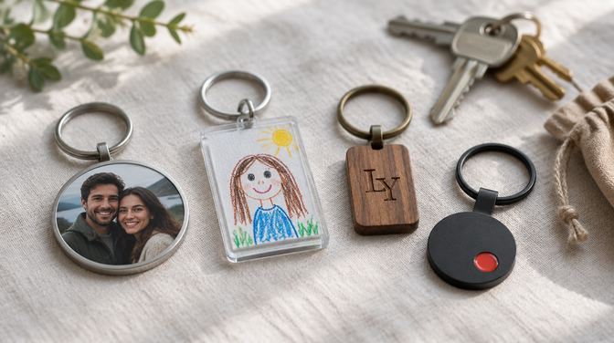
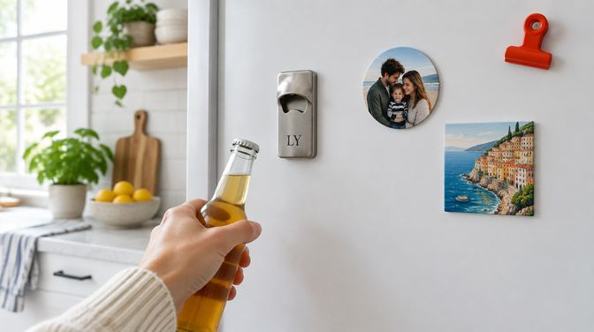
Hazır tasarımlardan birine dokunun; ürün sayfasındaki stüdyoda açılır. Rengi, yazıyı ve yerleşimi kendiniz ayarlar, beğendiğinizde sipariş verirsiniz — ya da kendi tasarım dosyanızı açarsınız.
Stüdyo on ürünün her birinin kendi sayfasında: tişört, hoodie, yelek, kupa, cam bardak, çakmak, kalem, anahtarlık, magnetli açacak.
Kurumsal tarafta iş üç başlıkta toplanıyor. Birincisi ekip giyimi: personel tişörtü, polo, sweatshirt ve hoodie, saha ve kurye yeleği, fuar görevlisi kıyafeti. İkincisi promosyon ürünleri: kalem, çakmak, anahtarlık, magnetli kapak açacağı, kupa. Üçüncüsü müşteriye giden hediye: yeni yıl ve bayram setleri, bayi ve tedarikçi hediyesi, yeni personel için hoş geldin paketi.
Bunların hepsini aynı tasarım dilinde basmak işin asıl kıymeti: aynı monogram yeleğin göğsünde, kalemin gövdesinde ve kupanın yüzünde aynı ölçekte durduğunda ortaya dağınık bir promosyon yığını değil, tanınan bir set çıkıyor. Logo dosyanız yoksa monogramı biz tasarlıyoruz; varsa kurumsal renk kodlarını baskıya birebir taşıyoruz.
Tekrar siparişte aynı ürün ve aynı baskı dosyası kullanıldığı için partiler arasında ton farkı olmuyor — sezon içinde işe yeni giren bir kişi için tek parça ek baskı da yapıyoruz. Beden ve adet listesini alıyor, ürünü tedarik ediyor, basılı ve etiketli teslim ediyoruz.
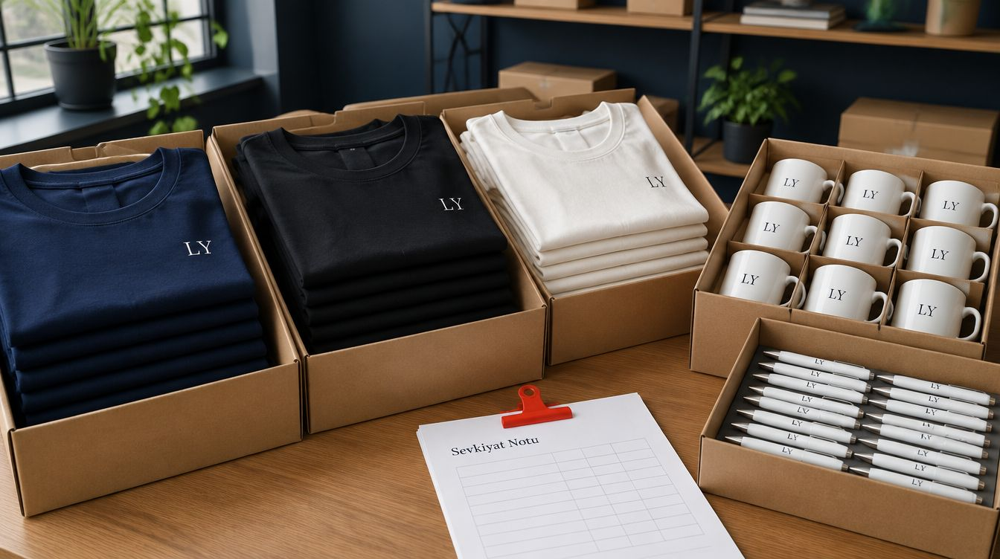
Hangi sektörde ne işe yaradığına dair kısa bir harita: kafe, bar ve restoran için çakmak ve magnetli açacak; emlak, oto galeri ve otel için anahtarlık; muhasebe, sigorta ve klinik için kalem; saha ve lojistik ekipleri için yelek; ofis ve müşteri hediyesi için kupa.
Kişiye özel tarafta kural şu: üründen önce fikir. Üzerindeki şey yalnız o kişiye bir şey anlatmalı — bir çocukluk fotoğrafı, ilk tanışma tarihi, aile içinde tekrarlanan bir söz, çocuğun kendi çizdiği resim, evcil hayvanın portresi. Tasarımı biz çiziyoruz, fotoğrafı baskıya hazırlıyoruz, ürünün üzerinde ekranda gösteriyoruz; onaysız hiçbir şey basılmıyor.
Sevgiliye, eşe, aileye. Yıl dönümü, doğum günü, sevgililer günü, anneler ve babalar günü. En çok istenen ürünler çift kupa takımı, eşli tişört, fotoğraflı anahtarlık ve isimli cam bardak.
Çiftlere özel animasyon ve albüm hikâyesi. Tanışmadan bugüne fotoğraflar sıralı bir hikâyeye dönüşüyor; sayfa sayfa tasarlanıp albüm olarak basılıyor, aynı hikâye kısa bir animasyon film olarak da teslim ediliyor. Nişan ve düğün gecesinde ekranda oynatılan sürümü ayrı hazırlıyoruz.
Nişan, düğün ve benzeri günler için animasyon film. Çiftin hikâyesi çizilmiş karakterlerle anlatılıyor: ilk buluşma, teklif, düğün günü. Gerçek çekimle karışık istenirse düğün ve etkinlik çekimi ile aynı ekipten çıkıyor.
Çocukluk fotoğraflarıyla hediyelik. Eski, solmuş bir fotoğraf büyütülüp temizleniyor ya da çizime çevriliyor; kupa, magnet, anahtarlık, tablo ve tişörte basılıyor. Anne-babaya, kardeşe, kendi çocuğunuza.
Toplu ama kişiye özel işler. Düğün ve nişan masası hatırası, kına gecesi dağıtımı, bekarlığa veda grubu, sınıf ve mezuniyet: aynı tasarımın isim isim değişen sürümleri tek siparişte basılıyor.
Baskının ötesinde: albüm, animasyon, çizim ve şarkı.
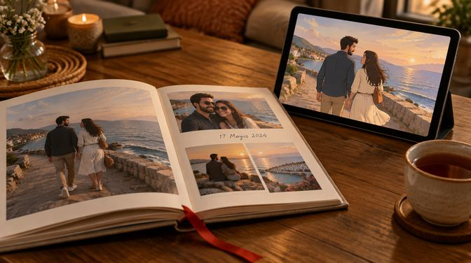
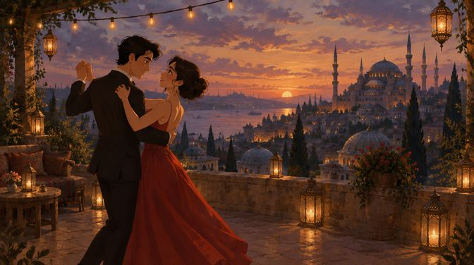
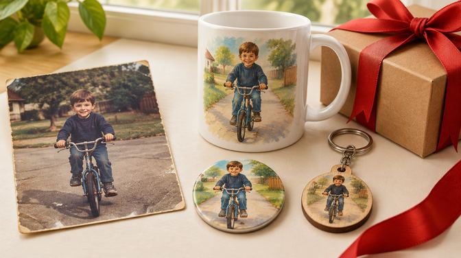
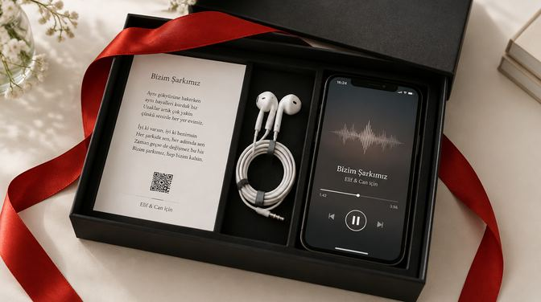
Bu kareler hizmet kapsamını anlatmak için hazırlanmış örnek görsellerdir; müşteri işi değildir. Müşteri işlerini yalnız izin alınca paylaşıyoruz.
Hediyenin bir de sesi olsun isteyenler için: hikâyenizi, isimleri, tarihleri ve tarzı alıyoruz; sözleri buna göre yazıp Suno ile iki-üç sürüm üretiyoruz. Seçtiğiniz sürüm mp3 olarak, basılı söz kartı ve QR kodla teslim ediliyor; kutuya kulaklıkla birlikte konabiliyor. Şarkı, albüm animasyonuna ya da düğün filmine gömülebiliyor; düğün girişi ve ilk dans için ayrı kurgu yapıyoruz.
Bu şarkılar ticari yayın için değil, hediye için üretiliyor; radyo ve platform yayını için lisans ve hak durumunu baştan konuşuyoruz.
Kime, hangi gün için, kaç adet — ürünü ve baskı yöntemini birlikte seçiyoruz.
Fotoğraf ve metinleri alıyoruz; tasarımı ürünün üzerinde ekranda gösteriyoruz, onaysız basmıyoruz.
DTF ya da UV DTF ile basılıyor; albüm, animasyon ve şarkı aynı sırada üretiliyor.
Kraft kutu ve kurdeleyle paketlenip elden ya da kargoyla teslim ediliyor; tasarım dosyaları sizde kalıyor.
Kişiye özel
Çiftlere ve ailelere
Adede göre
Telifli karakter, marka logosu ve lisanslı görselleri lisans belgesi olmadan basmıyoruz. Kişiye özel üründe kusur dışında iade almıyoruz; bu yüzden basmadan önce ekran onayı alıyoruz. Baskıya yetmeyecek fotoğrafı “olur” demeden önce söylüyoruz, çizim seçeneğini o zaman öneriyoruz.
DTF ısıyla kumaşa geçen bir transfer: tişört, sweatshirt, hoodie, yelek, bez çanta gibi tekstil ürünlerinde kullanılıyor; tam renkli basıyor ve yıkamaya dayanıklı. UV DTF ise ısı gerektirmeyen bir “soğuk baskı”: film cam, seramik, metal, plastik ve ahşap gibi sert yüzeylere yapıştırılıyor; cam bardak, termos, telefon kılıfı, kutu ve tabela için doğru yöntem bu. Hangisinin gerektiğini ürünü söylediğinizde biz seçiyoruz.
Evet. Sevgiliye, arkadaşa ya da aileye tek kupa, tek tişört basıyoruz; toplu sipariş şartı yok. Adet arttıkça birim maliyet düşüyor, bunu teklifte açık yazıyoruz.
Çoğu zaman olur. Fotoğrafı önce büyütüp temizliyoruz; baskıya yetmeyecek kadar kötüyse çizim yoluna geçiyoruz: fotoğraftaki kişi illüstrasyona çevrilip kupa, magnet ya da anahtarlığa o hâliyle basılıyor. Sonucu basmadan önce ekranda onaylıyorsunuz.
Fotoğraflarınızı ve kısa hikâyenizi alıyoruz; tanışma, ilk seyahat, teklif gibi anlar sıralı bir hikâyeye dönüşüyor. İki teslim var: basılı albüm (sayfa tasarımı ve baskı) ve aynı hikâyenin animasyon sürümü (telefonda, düğün ekranında ya da dijital çerçevede izlenen kısa film). İkisi birlikte de, ayrı ayrı da alınabiliyor.
Sizden hikâyeyi alıyoruz: isimler, tarih, ortak anılar, tarz (akustik, pop, düğün girişi, doğum günü). Sözleri bu bilgiyle yazıp Suno ile iki-üç sürüm üretiyoruz; seçtiğiniz sürüm mp3 olarak, söz kartı ve QR kodla teslim ediliyor. İsterseniz şarkı albüm animasyonuna ya da düğün filmine gömülüyor.
Kendi logonuzu evet, dosyasını gönderin yeter; yoksa monogram ya da logo tasarımını biz yapıyoruz. Telifli karakter, marka ve lisanslı görselleri lisans belgesi olmadan basmıyoruz; bunu baştan söylüyoruz ki sipariş yarıda kalmasın.
Tek parça baskılı ürün genellikle 2-4 iş günü; toplu sipariş adede göre. Albüm ve animasyon işleri fotoğraf sayısına bağlı, ilk taslağı bir hafta içinde gösteriyoruz. Tarih verirken onay ve kargo süresini de sayıyoruz; “yarın hazır” demiyoruz.
Gönderiyoruz. Bursa'da elden teslim ediyoruz, diğer illere kargoyla; kırılabilir ürünler (kupa, cam bardak) ayrıca korumaya alınıyor.
İletişim
Kime, ne zaman, kaç adet — yazın; tasarımı aynı gün gösterelim.